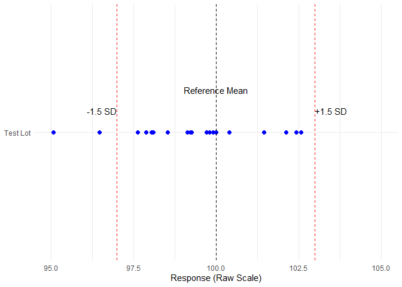
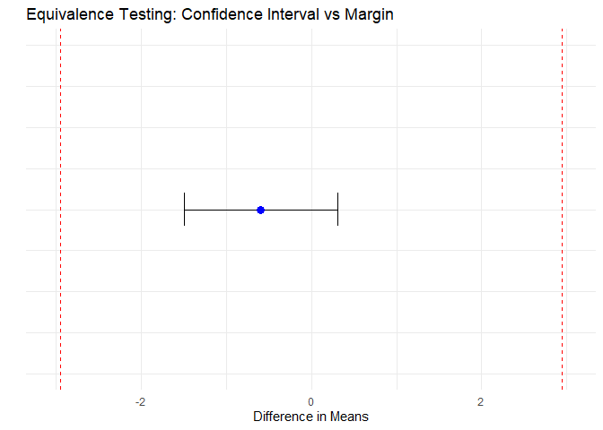

Chapter 4: Equivalence Margin on the Raw Scale
In raw-scale equivalence testing, it is common to define the equivalence margin based on the reference distribution, such as ±1.5 standard deviations (SD) around the reference mean. That is,
\[ \text{Equivalence Range (raw scale)} = \left[ \mu_{\text{ref}} - 1.5 \cdot \sigma_{\text{ref}},\ \mu_{\text{ref}} + 1.5 \cdot \sigma_{\text{ref}} \right] \] This can be visualized with the following example:
- Reference lots’ mean: 100
- Reference lots’ standard deviation: 2
- Equivalence margin: ±1.5 × 2 = ±3
- Let us assume that the test lot has a mean of 99
The equivalence range is therefore [97, 103].

Note: A few data points fall outside the equivalence range, but this is expected.
In equivalence testing, it is the mean of the test lot that must fall within the pre-defined margin —not every individual measurement.
This visualization is provided to give an intuitive sense of data spread.
However, for statistical testing using the TOST procedure, this range is transformed into an equivalence margin θ on the mean difference scale.
This allows the hypotheses to be framed as:
\[ H_0: |\mu_{\text{test}} - \mu_{\text{ref}}| \geq \theta \quad \text{vs.} \quad H_A: |\mu_{\text{test}} - \mu_{\text{ref}}| < \theta \]
This is why all plots and results in this book use the mean difference scale, where the equivalence margin appears symmetrically as [−θ, +θ] around 0.
This framing avoids confusion and ensures consistency with the TOST framework. Furthermore, this approach eliminates the need for transformation to the ratio scale, allowing equivalence to be directly assessed if the 90% confidence interval of the mean difference lies entirely within [–θ, +θ], equivalence is concluded.
